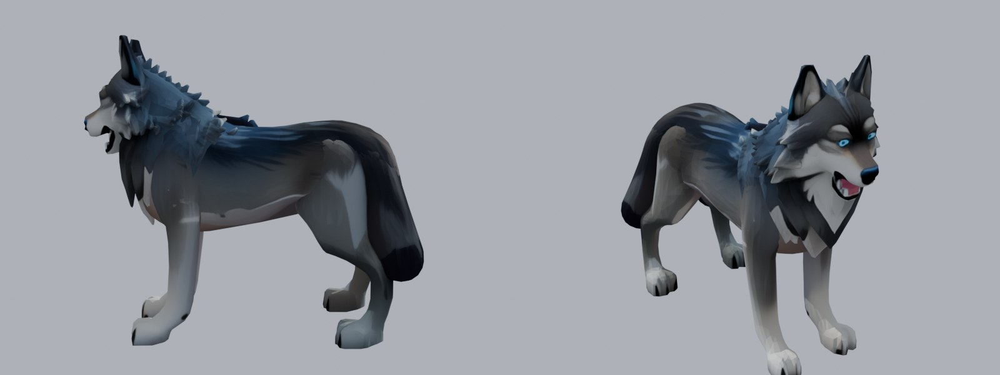
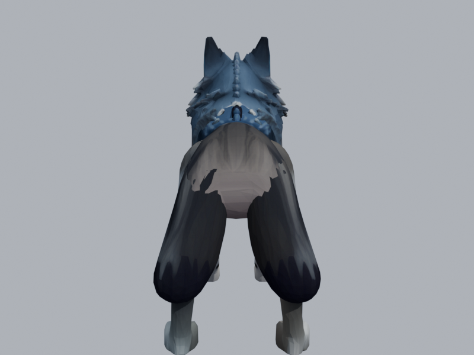
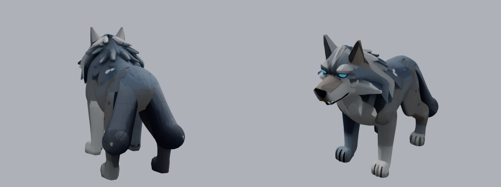

Correction : ton loup actuel a bien une queue, mais le générateur l'a coupée en deux moitiés, chacune collée à l'arrière d'une cuisse (vue de dos ci-dessous). D'où la « queue collée » qui se déforme. On le régénère.

Actuel

Actuel, de dos : la queue en deux moitiés collées aux cuisses
2ᵉ série : plus proche de ton loup actuel

4 · gris, crinière à pointes, queue sombre qui retombe